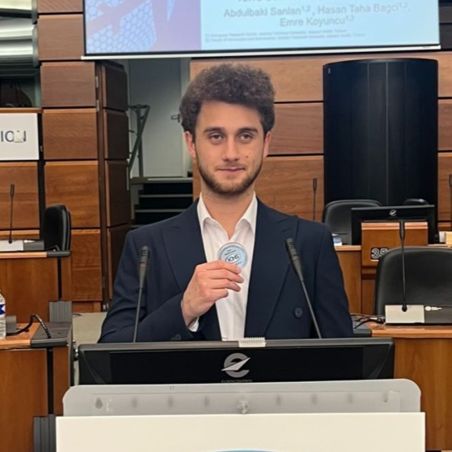

Currently pursuing a PhD in Aerospace Engineering at Istanbul Technical University and conducting research at the ITU Aerospace Research Center. Experienced in the design and implementation of advanced GNC algorithms for aerospace applications, with a strong focus on developing and applying novel approaches to improve the autonomy, precision, and robustness of aerial systems.
GPA: 3.78/4.00
GPA: 3.36/4.00
"Particle Filter-Based Localization Using Visual Feature Synchronization in GNSS-Denied Navigation"
A.B. Sanlan, H. T. Bagci, E. Koyuncu
The 25th Integrated Communications, Navigation and Surveillance Conference, Brussels (2025)
"Terrain-Aided Navigation Using a Point Cloud Measurement Sensor"
A.B. Sanlan, F. Erol, M. Abu-Khalaf, E. Koyuncu
arXiv e-prints, abs/2510.06470 (2025)
Designed and trained a CycleGAN-based generative model for image-to-image translation to minimize domain discrepancies across diverse datasets.
Developed a deep learning pipeline for automated species identification using audio recordings and signal processing.
Implemented a grounded image-classification framework built on SAM to enhance segmentation precision.
Computed fuel/time-optimal trajectories using single shooting, multiple shooting, and direct collocation methods.
Implemented RL for obstacle avoidance and optimal path planning for commercial aircraft in 2D environments.
Modeled 1v1 3D air combat scenarios and developed sub-optimal dogfighting algorithms using Approximate Dynamic Programming.
Designed controllers for the F-16 model (Aerobench-vv) using MATLAB/Simulink.
Soccer, Computer Games, Ice Skating
Prof. Dr. İbrahim Özkol
Istanbul Technical University
ozkol@itu.edu.tr
Assoc. Prof. Dr. Emre Koyuncu
Istanbul Technical University
emre.koyuncu@itu.edu.tr
Dr. Murad Abu-Khalaf
Turkish Aerospace Industries (Specialist)
murad.abu-khalaf@tai.com.tr